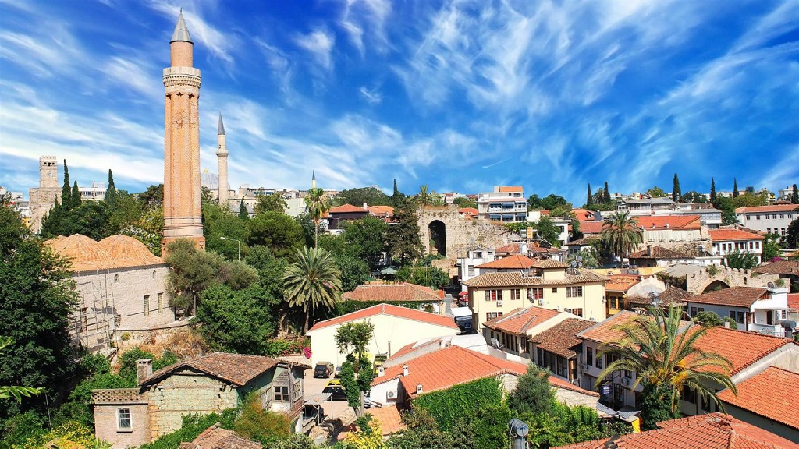
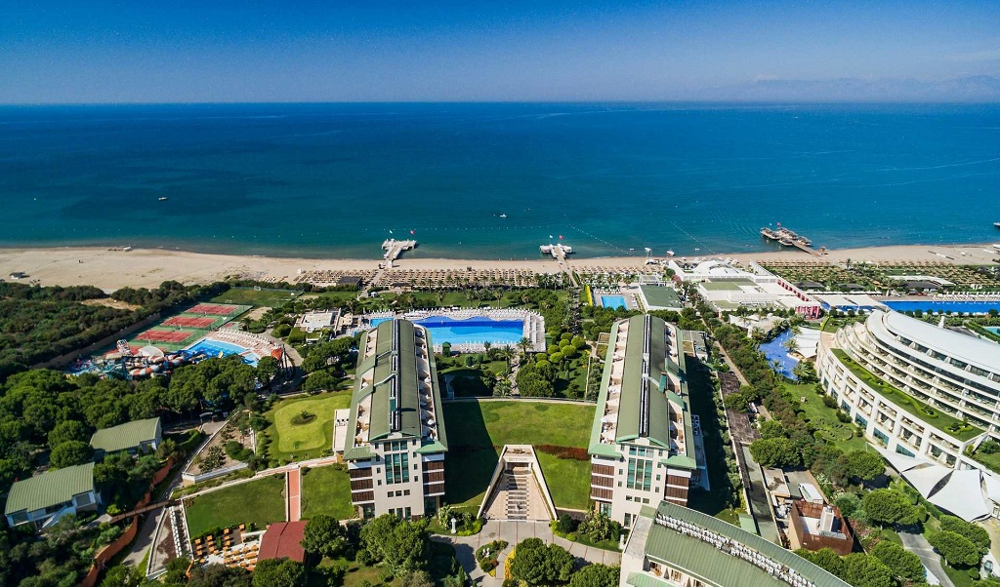
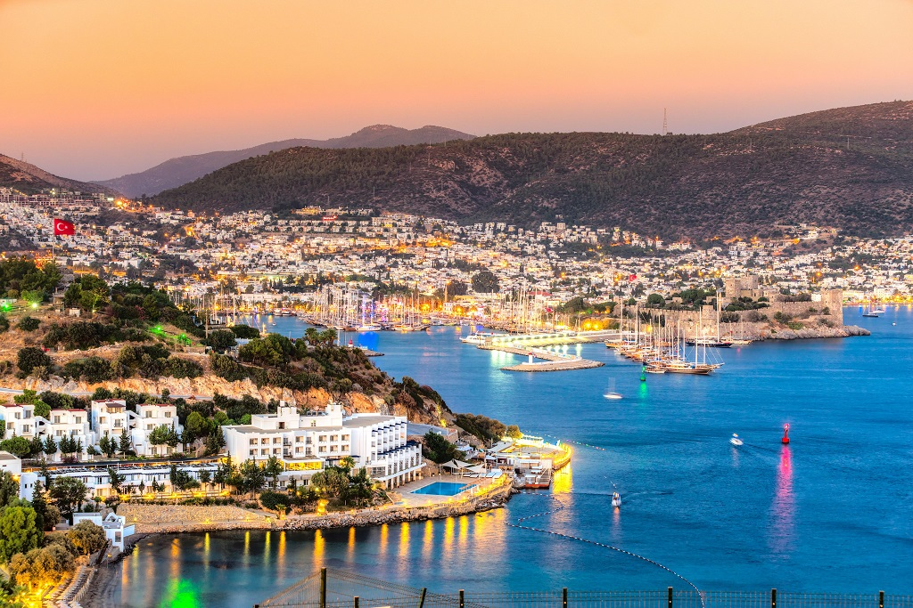

Antalya găzduiește o serie de evenimente, care atrag și mai mulți turiști spre această coastă a Turciei. Numeroasele obiective turistice localizate aici oferă vizitatorilor posibilitatea de a afla mai multe despre cultura și despre istoria țării. Cele mai importante atracții sunt: Kaleici, Poarta lui Hadrian, Moscheea Iskele, Muzeul Antalya, Muzeul Kaleici, Muzeul Jucăriilor și Parcul Karaalioglu.
Belek este unul dintre principalele centre turistice ale Turciei, fiind o stațiune luxoasă, cu multe spații de cazare de lux și locuri de distracție. Orașul este faimos datorită spa-urilor și apelor sale minerale, obținute din cele șapte izvoare. Poți vizita faimoasa cascadă Kursunlu, ruinele orașului Perga și amfiteatrul Aspendos.
Bodrum este plin de obiective turistice fascinante, care cu siguranță vor plăcea tuturor. Castelul Bodrum este probabil unul dintre cele mai cunoscute obiective de aici. În interiorul acestuia se află și Muzeul de Arheologie Subacvatică Bodrum, în care turiștii pot descoperi cele mai importante artefacte al zonei. De asemenea, de vizitat este și Mausoleumul din Bodrum, dar și portul în sine.
